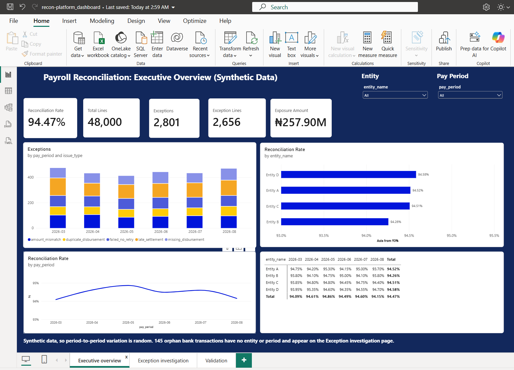
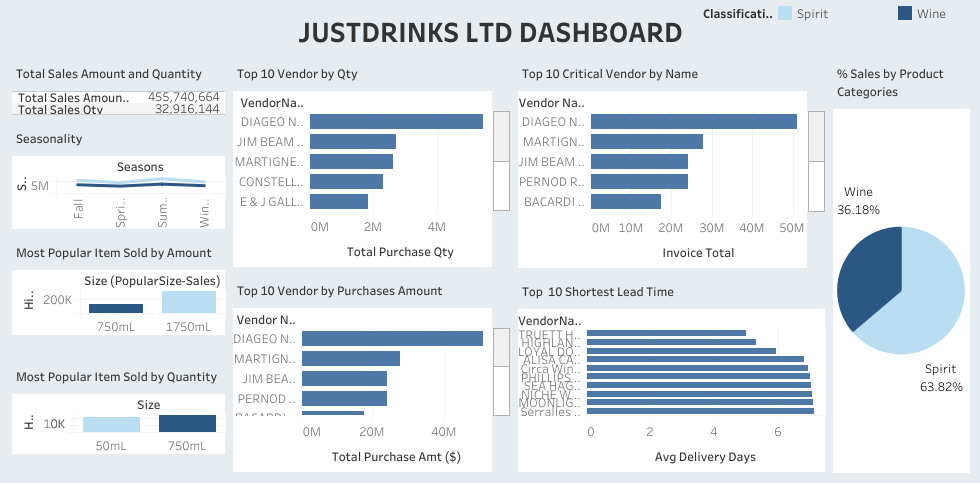
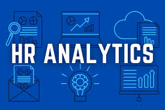
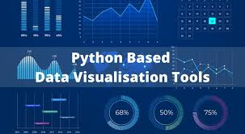

Data Team Lead | Analytics Engineering & Data Quality for Fintech
Lagos, Nigeria | ayomide.fadeyi1@gmail.com | +2348069248663
Data team lead with 6+ years across analytics, BI and database administration, specialising in payment reconciliation, data quality and analytics engineering for fintech. I lead data management, analytics and transaction monitoring at Proximaforte Limited, building tested, auditable pipelines and reporting with SQL, PostgreSQL, dbt, Python, Power BI and AWS. I also run DataBridge Talent NG, a talent and mentorship initiative for data professionals.
12/2025 - Present | Lagos, Nigeria
07/2025 - Present | Lagos, Nigeria
03/2025 - 07/2025 | Lagos, Nigeria
01/2024 - 02/2025 | Lagos, Nigeria
08/2022 - 12/2023 | Lagos, Nigeria
11/2026

06/2024 - 12/2024
06/2025
2022 - 05/2025
2024

2023

08/2022
08/2022
